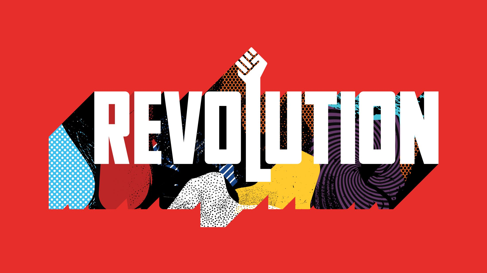

შედარება საფრანგეთი-ინგლისის
ტერმინი რევოლუცია ნასესხებია ასტრონომიიდან. ამ ტერმინით ციური სხეულების ციკლური ბრუნვა აღინიშნება( ლათ revolution -შემობრუნება.უკუცევა) პოლიტიკურ მოვლენებთან მიმართებაში ეს ტერმინი პირველად ინგლისში გამოიყენეს , როდესაც 1688 წლის მოვლენებს ‘’სახელოვანი რევოლუცია’’ უწოდეს. მაგრამ მის დამკვიდრებაში განსაკუთრებული წვრილი მაინც XVIII საუკუნის ბოლოსა და XIX საუკუნის დასაწყისში საფრანგეთში განვითარებულ მოვლენებს მიუძღვის. სწორედ ამ მოვლენების თვითმხილველებმა პირველად გამიჯნეს ერთმანეთისაგან ჩვეულებრივი ამბოხი და რევოლუცია (როდესაც მეფე ლუი XVI-მ 1789 წლის 14 ივლისს პარიზში განვითარებული მოვლენევი ამბოხად აღიქვა,ჰერცოგმა როშფუკო-ლიანკურმა მის უდიდებულესობას ასეთი შესწორება შეჰკადრა.: ‘’ ეს ამბოხება არაა, ეს რევოლუციაა’’ მას შემდეგ ტერმინი „რევოლუცია“ აღნიშნავს საზოგადოების პოლიტიკის , ეკონომიკისა და კულტურის თვისობრივ განახლებას, ძალისმიერი ხერხებითა და საზოგადოების ფართო ფენების მასობრივი მონაწილეობით განხორცილებულ გარდატეხას......
რევოლუციის საფუძველი ორივე ქვეყანაში ეკონომიკის დაბალი დონე და გადასახადები გახლდათ. საფრანგეთისგან განსხვავებით ინგლისში რელიგიური საკითხი ძალზე აქტუალური იყო, როგორც რევოლუციის დროს ისე მის შემდეგ. ორივე ქვეყნის აბსოლუტიზმის ძირითადი დამანგრეველი ფაქტორი, მათ მიერ გატარებული რეფორმები, ბიუჯეტიდან უაზროდ, საკუთარ სიამოვნებაზე დახარჯული თანხები და სიჯიუტე იყო..
ამ ბლოგში ვისაუბრებთ ინგლისისა და საფრანგეთის შედარებით საკითხებზე რატომაც მოხდა ორივეგან რევოლუცია და რა შედეგები გამოიწვია ასევე მათ საერთო საკითხებზე ....
ჯერ იქიდან დავიწყოთ რომ ორივე რევოლუცია სხვადასხვა პერიოდში დაიწყო..
• საფრანგეთის რევოლუციის პერიოდად ვიწრო გაგებით 1789-1799 წწ. მიიჩნევენ, ზოგი კი ბონაპარტის მმართველობის პერიოდსაც მიაკუთვნებს (1799-1815) წწ. •
ხოლო
ინგლისის რევოლუციის პერიოდის განსაზღვრა, ისტორიკოსთა შორის აზრთა სხვადასხვაობას იწვევს. საკამათოა არა მარტო რევოლუციის დაწყების თარიღი, არამედ მისი დასრულების დროც. ზოგიერთი მკვლევარი ინგლისის რევოლუციას იწყებს 1603 წელს, როდესაც გარდაიცვალა ინგლისის დედოფალი ელისაბედ II და ტახტზე ავიდა მარიამ სტიუარტის ვაჟი ჯეიმზ I. ინგლისის ტახტზე ახალი დინასტიის ასვლას სერიოზული ცვლილებები მოჰყვა ინგლისის საშინაო და საგარეო პოლიტიკაში. ეს, უპირველეს ყოვლისა იმით გამოიხატა, რომ სტიუარტებმა უგულვებელყვეს ინგლისის ტრადიციები. ყოველივე ამან გამოიწვია ინგლისის რევოლუციის ზღვრამდე მისვლა. ამიტომ ისტორიკოსებმა სტიუარტების მმართველობის დასაწყისს „ინგლისის რევოლუციის პროლოგი“ უწოდა.
ბევრი ისტორიკოსი ფიქრობს, რომ ინგლისის რევოლუცია დაიწყო 1640 წელს ხანგრძლივი პარლამენტის მოწვევით, რომლის ირგვლივ მოხდა რევოლუციური ძალების კონსოლიდაცია….
სხვები მიიჩნევენ, რომ ინგლისის რევოლუცია დაიწყო 1642 წელს, როდესაც ნოტინჰემში მეფემ აღმართა შტანდარტი და ომი გამოუცხადა პარლამენტს. დაპირისპირება აბსოლიტიზმსა და პარლამენტს შორის სამხედრო კონფრონტაციით, დაპირისპირებით, დასრულდა.
რევოლუციის დამთავრების თარიღის ირგვლივ ასევე გამოითქვა სხვადასხვა შეხედულებები. ერთნი ინგლისის რევოლუციას ასრულებენ ოლივერ კრომველის გარდაცვალებით 1658 წლის 3 სექტემბერს. მეორენი ამტკიცებენ, რომ ინგლისის რევოლუცია დასრულდა 1660 წელს, როდესაც მოხდა სტიუარტების დინასტიის რესტავრაცია. ინგლისში უმეფობის ხანის ინტერრეგნუმი დასრულდა.
მესამენი ინგლისის რევოლუციის დამთავრებას შესაძლებლად მიიჩნევენ 1688 წელს, როდესაც ინგლისში დაემხო სტიუარტების დინასტია და ინგლისის ტახტზე ავიდა უილიამ ორანელი. ამ გადატრიალებამ საფუძველი ჩაუყარა ინგლისში დემოკრატიის დამკვიდრებას და მის შემდგომ გაფართოებას.
საერთო პოლიტიკა კი გამოიყურება ასე ჩარლზ I პოლიტიკა ბევრად უფრო უხეში და დიპლომატიის დაბალი დონე იყო ვიდრე ლუი XVI -ისა. ინგლისმა ბევრი კანონი შემოიღო თვითნებურად გადასახადები ...არისტოკრატიული წოდება რომელზეც უარის თქმის შემთხვევაში ჯარიმა იყო საკმაოდ დიდი. და ასე შემდეგ... ჩარლზ I- ის ბოლო უკიდურესი ნაბიჯი იყო ოპოზიციონერ ლიდერთა დაპატიმრება, რითაც თემთა პალატის უფლებები დაირღვა. შეიძლება ითქვას რომ ეს იყო მწვერვალი იმ ქმედებებისა რომელმაც ინგლისი სამოქალაქო ომამდე მიიყვანა და შემდგომში რევოლუციური სახე მიიღო (1640-1660). რაშიც ლომის წვლილი მიუძღვის ოლივერ კრომველს (1599-1658). გასათვალისწინებელია ამ რეფორმების ფონზე გლეხთა ამბოხი, რომელთაც ყველაზე მეტად უჭირდათ გადასახადების გადახდა. კრომველმა ეს ხალხი თავის ყაიდაზე მოაწყო, გამოწრთო და პურიტანული რელიგიის აღმაფრენის, ცნობიერების ქვაკუთხედი ჩაჰბერა. იგი აფასებდა ხალხს არა ჩაცმულობით ან იდეის თვალსაზრისით, არამედ პურიტანობის ერთგულების თვალსაზრისით.
საფრანგეთში, 1789 წელს მაისის შეხვედრაზე, გენერალურ შტატებში გიგანტური პარლამენტი გაიყო სამ ნაწილად: საასულიერო წოდება, არისტოკრატია და მესამე წოდება (უბრალო ხალხი). ამ „უბრალო ხალხმა“ რომლებიც უმრავლესობას წარმოადგენდნენ ჩამოაყალიბა სახალხო ეროვნული კრება. ლუი XVI მიხვდა, რომ ეს პირდაპირი შეტევა იყო მონარქიაზე, მან გამოიყენა საკმარისი ძალა რათა აღეკვეთა ყოველგვარი წინააღდეგობა და შეენარჩუნებინა მეფის პრესტიჟი. როდესაც საფრანგეთის მეფემ ბრძანა აეკრძალათ ეროვნული შეკრებები, ოპოზიციის მხრიდან დიდი გამოხმაურება მოჰყვა, რაც მომავალში რევოლუციაში გადაიზრადა (1789–1799). აღსანიშნავია ის, რომ ამ ორ რევოლუციას ევროპული სახე ჰქონდა: ინგლისში დაპირისპირებამ თავდაპირველად კულტურული ხასიათი მიიღო. ინგლისის მეფე დათმობაზე წავიდა, გაუქმდა მაღალი კომისია, რითაც მოსახლეობამ ამოისუნთქა.“
.ლუი XVI ინგლისელი მონარქისგან განსხვავებით, დარბევის ბრძანება გასცა, რასაც ხალხის ამბოხი და ბასტილიის აღება მოჰყვა (14 ივლისი, 1789). მხოლოდ საპირწონე ძალის შემდგომ მიხვდა მეფე რომ კონსტიტუციის მოთხოვნებს უნდა დათანხმებულიყო, რომელიც ითვალისწინებდა: გადასახადების გაუქმებას, ეკლესიებისგან მიწების ჩამორთმევასა და არისტოკრატთა პრივილეგიების გაუქმებას. კონსტიტუციამ ძლიერ შეზღუდა მეფე, მიუხედავად იმისა, რომ ის კვლავ ჯარის სათავეში იდგა და საგარეო საქმეში ჩარევის უფლებაც ჰქონდა, ძირითადი სამოქმედო მაგისტრალი მაინც ეროვნულ კრებას ეკავა, რომელიც ბიუჯეტის მართვასთან ერთად, ომის გამოცხადების უფლებასაც იტოვებდა. ამ მხრივ ფრანგები ძალზედ რადიკალები იყვნენ, იგივე პოლიტიკას ინგლისში მეფე არ შეეგუებოდა, ირლანდიაში გაიქცეოდა და აბსოლუტიზმის დამყარებისთვის ჯარს მოუყრიდა თავს. ლუი XVI სცადა მსგავსი რამ, მაგრამ იმდენად დაბალი იყო რეპუტაცია მეფისა, რომ იმდენ ადამიანსაც კი ვერ მოუყარა თავი ქვეყნიდან რომ გაპარულიყო. რუსეთის ელჩი მხარს უჭერდა მეფეს, რომელმაც ყალბი პასპორტიც კი დაუმზადა, მაგრამ გზად მიმავალი იცნეს და უკან დააბრუნეს. მეფეს სახელმწიფოებრივ ღალატში ბრალი დასდეს და თავი მოკვეთეს, ისევე, როგორც ჩარლზ I-ს.
ამიტომაც ამ ორი რეოლუციიის მთავარი სურვილი იყო ძალაუფლების მეტი ძალაუფლების ფულის ფლანგვის და ხალხის თავის ჭკუაზე ყოლა მაგრამ ხალხი იმდენად დააბეჩავეს რომ ხალხსაც ამოუვიდა ყელში და შეძლეს წყობილების შეცვლა და ორივე მართველობა გახდა რესპუბლიკური ... შეძლეს გადატრიალება და მთავრობის სათავეში მყოფთ არასწორი რეფორმები და გადასახადების პასუხი მიიღეს ხალხის რევოლუცია ... დასასრულს ასე ვიტყვი
ფრანგ პოეტს პოლ ვალერის აზრით „მსოფლიოს მუდამ ორი საფრთხე ემუქრება: წესრიგი და არეულობა.“